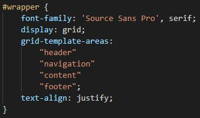
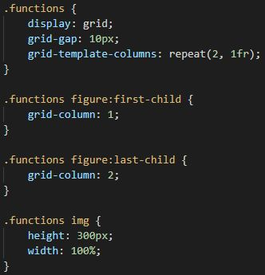
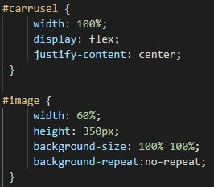

El presente blog se ha desarrollado para la asignatura Difusión de contenidos multimedia vía web del Máster en Ingeniería Web de la Universidad de Oviedo.
La finalidad de este blog es mostrar el proceso de desarrollo de los distintos ejercicios de la asignatura. Para cada uno de ellos se ha creado una entrada en este blog.
Los ejercicios realizados, además de este blog, son:
WebSockets: una aplicación de dibujo colaborativo con WebSockets, donde los usuarios puede dibujar figuras y compartirlas con el resto de usuarios.
WebRTC: aplicación de videochat utilizando WebRTC. Esta aplicación permite a los usuarios registrados hacer videollamadas entre ellos, así como enviarse mensajes.
Vídeo grupal: vídeo realizado con tres compañeros de la asignatura. Consiste en un telediario donde se muestran distintas secciones con noticias graciosas.
Desarrollo
Para desarrollar este blog se han utilizado las tecnologías HTML, CSS y JavaScript.
Adicionalmente, se ha utilizado la librería Font Awesone para mostrar los iconos de algunas de las acciones del sitio web, por ejemplo, los botones de la galería de imágenes
que se puede ver en la entrada WebRTC, o el botón que aparece en todas las entradas encima del footer que permite hacer scroll al inicio de la página.
En cuanto a la estructura de las páginas se ha utilizado grid layout que, junto con las media queries, ha ayudado a favorecer la experiencia de usuario, generando pantallas responsivas, etc.
Este blog tiene un esquema general que contiene:
Encabezado: muestra el nombre del blog.
Barra de navegación: muestra las distintas entradas del blog y proporciona acceso a ellas.
Cuerpo: contenido asociado a una entrada.
Pie de página: muestra el nombre de la autora (proporciona enlace a su correo electrónico) y el nombre de la asignura para la cual se ha creado este blog.
Este esquema se puede observar, además de en los archivos HTML, en el fichero default.css.

Esquema general del blog (default.css)
Además de utilizar grid layout para el esquema general del blog, se ha usado en la entrada WebSockets para colocar algunas imágenes en paralelo (sólo en pantallas con resuloción superior a 1050px).
Esta estructura se puede ver en el fichero websockets.css, así como las media queries correspondientes.

Grid layout en la entrada WebSockets
Por otro lado, en la entrada WebRTC se ha añadido una galería de imágenes para mostrar los distintos tipos de mensajes que se pueden producir cuando un cliente se comunica con el servidor.
Esta galería de imágenes está formada por un componente img en donde se carga dinámicamente la imagen correspondiente; y dos botones, uno que permite visualizar la imagen anterior a la actual y otro para visualizar la imagen posterior a la actual.
En el fichero webrtc.css se puede ver que para conseguir que los botones se muestren alineados (verticalmente y horizontalmente) con la imagen, se ha usado la propiedad display: flex.
También se puede ver que se utilizan las propiedades background-size y backgorund-repeat para hacer que la imagen que se carga dinámicamente ocupe todo el espacio del componente donde se introduce.

Galería de imágenes en la entrada WebRTC (webrtc.css)
En el fichero webrtc.js se encuentran las constantes, variables y las funciones necesarias para cargar las imágenes dinámicamente en la galería y para ofrecer funcionalidad a los dos botones de ésta.
Las funciones son tres:
nextImage: modifica la imagen actual por la siguiente. En el caso de que, tras cambiar la imagen, la imagen actual sea la última de la galería, se oculta el botón que se encuentra a la derecha de la imagen.
backImage: modifica la imagen actual por la anterior. En el caso de que, tras cambiar la imagen, la imagen actual sea la primera de la galería, se oculta el botón que se encuentra a la izquierda de la imagen.
renderImage: modifica la imagen, así como el pie de foto asociado a ella, en función de la posición actual.
Despliegue
El código de este blog se puede encontrar en el GitHub de la autora.
Adicionalmente, se ha creado una presentación (ampliación de esta entrada del blog) con el framework Reveal.js cuyo
código se puede encontrar en este enlace.